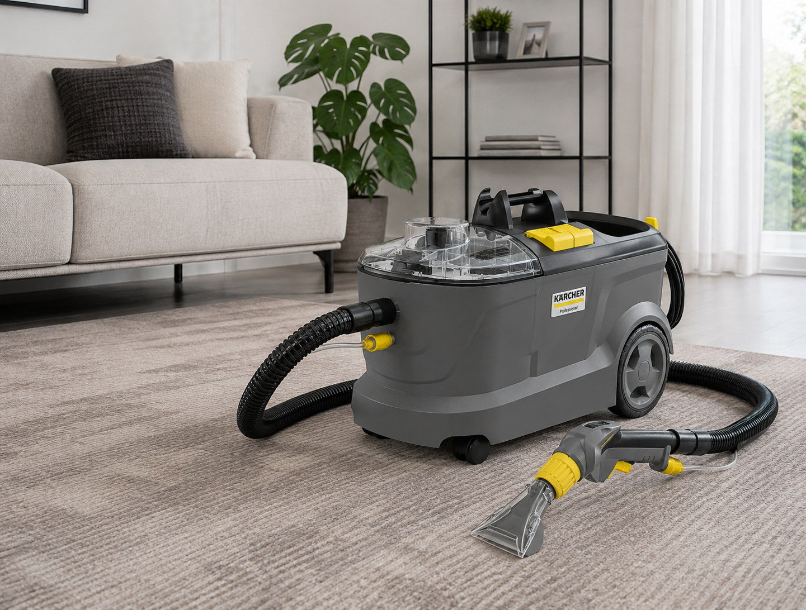

Takarítógép bérlés Győrben
Egy gép, két feladat: szőnyeg és kárpit mélytisztítása. A Kärcher Puzzi 10/1 szórópisztolyos extrakciós gépet napi vagy fél napos díjjal visszük haza Győrből – pénzbeli kaució nélkül.
Foglalás telefonon Árak és elérhetőség
Átvétel személyesen a Balogh Ádám utcai telephelyen. Kiszállítást nem vállalunk.

Bérleti árak
Fix díjak, rejtett költségek nélkül. A gép tartozékai (szőnyegtisztító és kárpittisztító fej, tömlő, szórópisztoly) minden bérlésben benne vannak.
6 óra
5.000 Ft
Egy nappali + lépcső vagy 2–3 ülőgarnitúra fér bele.
24 óra
6.500 Ft
A legnépszerűbb: egy teljes lakás szőnyegei és kárpitjai kényelmesen.
Tisztítószer
1.500 Ft
Vanish Oxi Action gépi szőnyeg- és kárpittisztító sampon, flakononként. Nem kötelező, hozhat sajátot is.
Kaució: nem kérünk pénzbeli kauciót.
A bérléshez érvényes személyi igazolvány és lakcímkártya szükséges, ezekkel kötjük meg a bérleti szerződést. Az adatokat kizárólag a kölcsönzés idejére tároljuk.
Foglalás és elérhetőség
Foglalás
- Hívjon a +36 30 298 8360 számon, és mondja meg, melyik napra és hány órára kell a gép.
- Visszaigazoljuk, hogy az adott idősávban szabad-e. Hétvégére és hónap eleji időpontokra érdemes 2–3 nappal előbb szólni.
- Átvételkor 5 perc alatt megkötjük a szerződést, és megmutatjuk a gép használatát.
Átvétel és visszahozatal
9028 Győr, Balogh Ádám u. 6.
Hétfő–péntek: 08.00–17.00
Szombat: 08.00–14.00
Vasárnap: zárva
A gép egy autó csomagtartójában elfér (kb. 31 × 39 × 54 cm, 10 kg üresen). A 24 órás bérlést a következő nap azonos időpontjáig kell visszahozni, 30 perc türelmi idővel.
+36 30 298 8360Kärcher Puzzi 10/1 – műszaki adatok
| Géptípus | Kärcher Puzzi 10/1 szórásos-extrakciós (mélytisztító) gép |
|---|---|
| Frissvíz-tartály | 10 liter |
| Szennyvíztartály | 9 liter |
| Munkaszélesség | 230 mm (padlófej) / 110 mm (kézi kárpitfej) |
| Tartozékok | Padló-/szőnyegtisztító fej, kézi kárpittisztító fej, szívótömlő szórópisztollyal |
| Hálózat | 230 V, normál konnektor |
| Tisztítószer | Vanish Oxi Action gépi szőnyeg- és kárpittisztító sampon (1.500 Ft/flakon), vagy saját, alacsony habzású gépi szer |
Mire jó a gép?
Szőnyeg és padlószőnyeg
Darabszőnyeg, futó, padlószőnyeg és lépcsőburkolat mélytisztítása. Részletes útmutató: szőnyegtisztítás lépésről lépésre.
Kanapé, fotel, matrac
Szövet ülőgarnitúra, fotel, ágymatrac és étkezőszék felfrissítése. Anyagtípusok és foltkezelés: kárpittisztítás otthon.
Autókárpit
Ülések, szőnyegek, csomagtér – a kis kézi fejjel a szűk helyekre is befér.
Költözés, kiadó lakás
Ki- és beköltözés előtti nagytakarítás, albérlet átadása, bútor eladása előtti frissítés.
Kölcsönzési feltételek
- Előfoglalás személyesen, telefonon vagy üzenetben.
- A bérleti szerződéshez érvényes személyi igazolvány és lakcímkártya szükséges.
- Pénzbeli kauciót nem kérünk.
- A szerződésben rögzített időn túli használatért – 30 perc türelmi idő után – plusz egy napi bérleti díjat számolunk fel.
- A gépet kérjük ürített tartállyal, tiszta állapotban visszahozni.
- A rendeltetésellenes használatból eredő kárért a bérlő felel.
Fotók és vélemények
Az oldalon látható fotó a ténylegesen kölcsönözhető gépünkről készült. Véleményeket nem másolunk és nem gyártunk: ha bérelt tőlünk, a Google-profilunkon tud értékelést írni – ezek ott, hitelesen olvashatók.